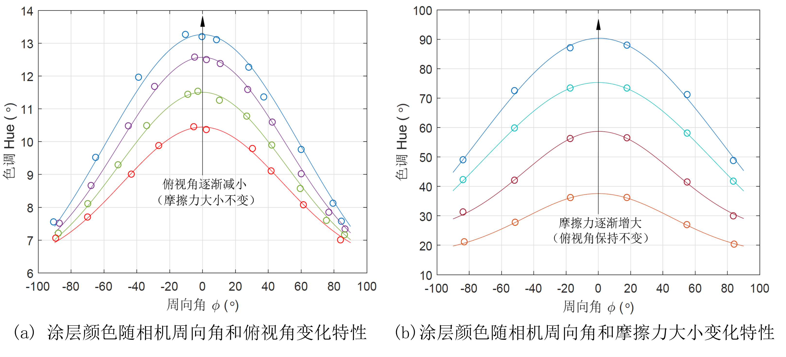
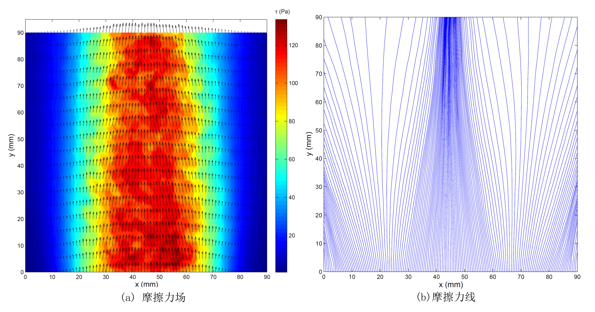

基于人工智能图像处理的飞行器表面摩擦力场测量技术
背景简述
流体与固体壁面之间的摩擦阻力是流体动力学领域的一个重要参数。在空气动力学领域，许多重要信息可以通过显示或者测量壁面摩擦阻力信息而获取。流过飞行器表面的气流产生的摩擦阻力会显著影响飞行器的性能。内部流动产生的摩擦阻力（如喷气发动机压缩空气产生的摩擦阻力）同样会对发动机的推阻性能产生重要影响。准确测量摩擦阻力无论是在理论研究中还是工程实际中都具有重要意义。然而，壁面摩擦阻力的测量一直是一个难题，一直没有很好的测量方法和技术。传统的摩擦力测量方法主要采用机械或者电子的方法，如机械式天平、侵入式探针和传感器等。这些方法属于局部方法，只能测量单点摩擦力信息，并且会给流动带来干扰，甚至会给壁面带来破坏。如果能够高分辨率测量出壁面摩擦力的矢量分布，显然具有重要的科学意义和工程价值。
剪切敏感液晶（Shear-Sensitive Liquid Crystal, SSLC）涂层技术是一种非接触式壁面摩擦力矢量分布的全局测量方法。SSLC是一种固醇类液晶，其分子在物面上会形成一种螺旋轴垂直于壁面的螺旋结构，螺旋轴的长度与可见光的波长量级相同。这种螺旋结构在视觉上非常活跃，对白光（光谱连续分布的光，如太阳光、钨灯光等）选择性反射，而且反射波长与螺旋轴长度成比例关系。在壁面摩擦力的作用下，螺旋结构会变形，螺旋轴会倾斜，综合效果是对入射光的反射具有很强的方向性，并且这种变化具有快速可逆性，随摩擦力变化而变化。如果能将SSLC涂层的颜色随这些参数变化的规律进行校准，那么便可以应用SSLC涂层测量壁面摩擦力的矢量场。
目前，已有一些研究人员在各种特殊情况下根据从不同方向观测的SSLC涂层颜色解算相应的摩擦力矢量场。比如，当壁面为平面并且光线方向为法向照射时，从不同方向以相同俯视角观测的SSLC颜色服从高斯分布，据此可解算出壁面摩擦力矢量场。这种处理方法对实验条件要求比较苛刻，并且只适合于少数特殊场合，方法的适应性较差。
在光照条件下，SSLC涂层随着摩擦力大小、方向以及观察方向的变化而呈现不同颜色。图 1为射流作用下顺流方向和逆流方向观测的SSLC涂层颜色（从其它方向观测的颜色介于二者之间）。从图中可以清晰地看出，不同方向观测的SSLC颜色差异显著。

本项目研究将人工智能技术引入到SSLC涂层的颜色处理环节，即采用人工智能神经网络方法学习SSLC涂层的颜色变化特性，建立SSLC涂层颜色与摩擦力之间的映射关系，从而能够根据SSLC涂层颜色快速解算摩擦力场。
建立SSLC涂层颜色与摩擦力场之间的对应关系数据库
图2给出了对于单个物理点，根据不同方向（ϕ）观测的SSLC涂层颜色图像解算摩擦力矢量的方法。对于测量平面的所有物理点重复操作，便可以得到不同的映射数据。
图3给出了SSLC涂层颜色随观测方向和摩擦力大小的变化特性，其中摩擦力方向沿对称线方向（）。图中圆圈为实验数据，细实线为拟合的Gauss曲线。图中采用色调Hue表示SSLC涂层颜色，与主波长是单调对应关系。可见，在法向光照射下，SSLC涂层颜色随相机周向角、俯视角和摩擦力大小的变化特性具有很强的规律性，并且关于摩擦力方向呈对称分布。由于在法向光照射下的SSLC涂层颜色关于摩擦力方向对称分布，因而只需要将测量的SSLC涂层颜色变化特性沿横坐标方向平移相应角度即可得到SSLC涂层在其它方向的摩擦力作用下的颜色变化特性，从而得到SSLC涂层的颜色Color随摩擦力大小、摩擦力方向、相机周向观测角、相机俯视角的变化特性，记为。

使用人工智能算法的SSLC涂层颜色数据库进行学习
图4给出了本项目研究中采用的神经网络。其中，输入变量为SSLC涂层在选定的若干个观测方向显示的颜色，输出变量为摩擦力大小和方向。该网络用于建立SSLC涂层在不同空间方向显示的颜色与摩擦力大小和摩擦力方向之间的映射关系。
首先，选取俯视角相同的6个方向作为观测方向，以从这些方向观测的SSLC涂层颜色作为样本输入，如图 5所示。图 6为神经网络算法解算的喷管射流的壁面摩擦力场。其中，位于y = 5 mm、y = 30 mm、y = 85 mm处的SSLC涂层颜色和相应的摩擦力矢量作为学习样本（共有678个样本，图中每隔两个矢量画出一个矢量）。


图 7给出在y = 50 mm处（非样本），神经网络与传统多视角方法解算的摩擦力大小和方向的定量比较。为了进一步比较，图 7中还给出采用3个观测方向时神经网络的解算结果。当采用6个观测方向时，神经网络算法解算的摩擦力大小的均方误差为0.13 Pa，方向的均方误差为0.02°（对应的摩擦力大小和方向误差的均值和标准差分别为0.11±0.34 Pa和0.01±0.15°）。当只采用3个观测方向时，神经网络解算的摩擦力大小的均方误差为0.91 Pa，方向的均方误差为0.72°（对应的摩擦力大小和方向误差的均值和标准差分别为-0.22±0.92 Pa和0.01±0.85°）。可见，神经网络算法能够准确建立从给定方向观测的SSLC涂层颜色与摩擦力矢量之间的映射关系，并且对相机观测角的数量要求更加灵活。虽然目前研究中还没有考虑相机俯视角的变化，但是相机俯视角的变化并不会带来本质影响，下一步将针对俯视角可变情况开展研究。
在本示例中，采用的计算机平台为MacBook Air（处理器Intel Core i5-5250U 1.6 GHz，内存DDR3 4 GB），神经网络训练学习时间为1.99 s（可离线完成），解算图 7所示的摩擦力场耗时0.054 s，初步具备实时解算摩擦力场的潜力。与之对比，在相同的计算机平台上，传统多视角方法解算图 7所示的摩擦力场，耗时为70.24 s。